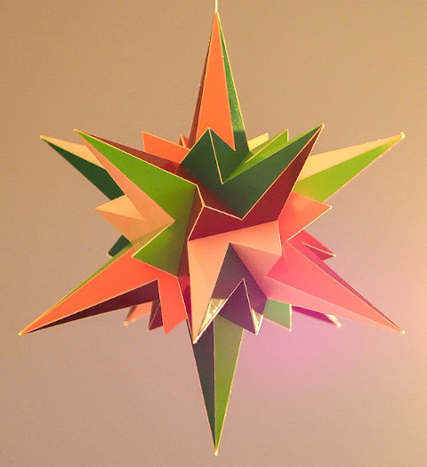

52nd Stellation of an Icosahedron

Ever since reading "The 59 Icosahedra" I wanted to build this specific stellation. Is is indicated by E f1 f2 (cell notation) or simply as number 52. I think that the thing that makes this one attractive is that all the pieces that need to the glued are the same, there are only rotational symmetries and it looks like a star.
The colouring of the model is in such a way that each plane has one colour and all tetrahedra have one distinct colour. Try to see that in the model, both in the picture and the virtual model. Note that one dark green face seem to have a different colour due to reflections.
Though I wanted to build a model for this one, it took me until 2022 to finally build one. I am very happy with the result. It was December when I finished it and it fit well with Christmas. The picture was taken in that atmosphere.
Links
- Thumbnails
- All stellations from the book "The 59 icosahedra" in one table as interactive models
- Teun's Polyhedra
- Home
Last Updated
2023-06-17